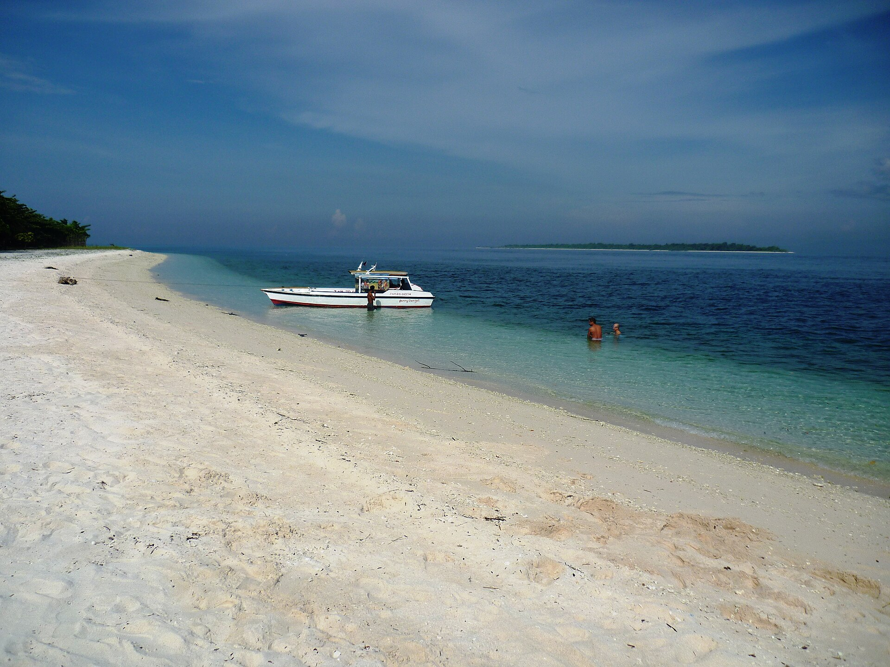
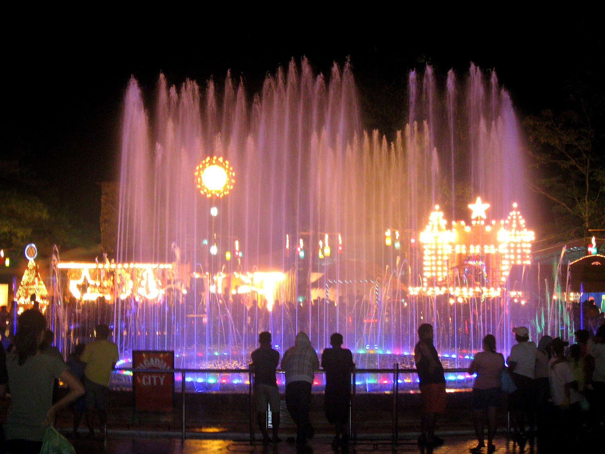

02 / Tourist Spots
Popular Destinations
Pink-tinged shores, historic walls, and easy city walks across the peninsula.

01 / Island Escape
Great Santa Cruz Island
Zamboanga City
Great Santa Cruz Island is famous for its blush-pink sand formed by crushed red organ-pipe coral mixed with white sand, as well as its thriving mangrove lagoon. Visitors can join guided lagoon boat tours and enjoy the protected shoreline through regulated city arrangements.

02 / Built Heritage
Fort Pilar
Zamboanga City
Construction of this historic Spanish stone fortress began in 1635. Today, its walls house the National Museum’s Zamboanga branch and an outdoor Marian shrine, offering a quiet place to learn about the region’s history and maritime heritage.

03 / Historic Site
Rizal Shrine, Dapitan
Dapitan City, Zamboanga del Norte
This national shrine preserves the Talisay coastal estate where José Rizal lived in exile from 1892 to 1896. Visitors can walk the shaded grounds, view the reconstructed bamboo houses, and explore the museum exhibits about his life in Dapitan.

04 / Coastal Scenery
Buluan Island
Ipil, Zamboanga Sibugay
Buluan Island lies off the coast of Ipil in Zamboanga Sibugay and is surrounded by protected marine waters. Its white-sand beach and calm coastal views make it a peaceful stop for travelers exploring the province.

05 / City Landmark
Plaza Luz
Pagadian City, Zamboanga del Sur
Plaza Luz is a welcoming public gathering place in the center of Pagadian City, the sloping coastal capital of Zamboanga del Sur. Known for its colorful musical dancing fountain, the plaza is a favorite landmark for relaxed evening walks.